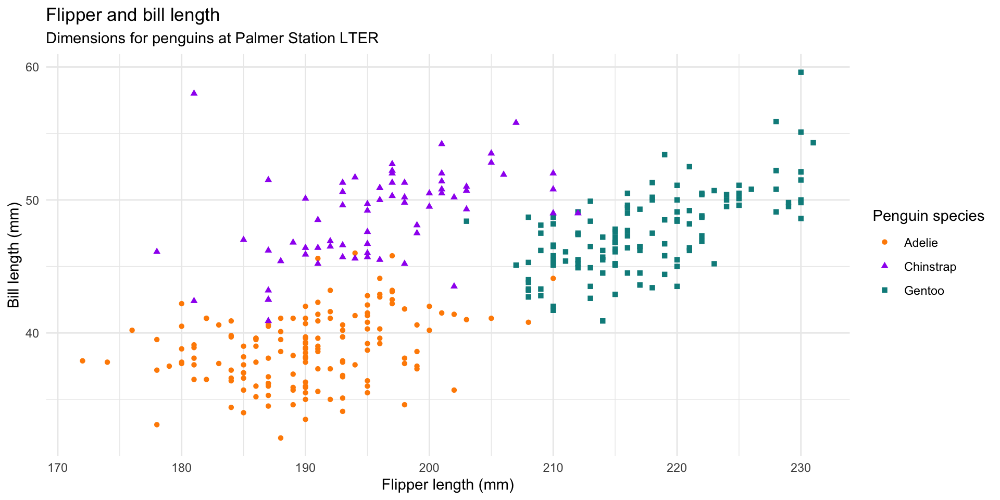

Quarto- Spring 2026
Paper Thoughts?
Classic Example of Quarto
- download hello.qmd from the course website
- open it in RStudio
Rendering
To render a Quarto document, use the “Render” button in RStudio.
When you render a Quarto document, it will execute all the code chunks and include the output in the final document.
In Rstudio - you have two views of the quarto document
- Source view is where you write your code and markdown.
- Visual view is where you see the final output of your document.
Lets go through the code in hello.qmd and see how it works
Quarto documents are made up of three main components:
- YAML header
- Markdown content
- Code chunks
Markdown Content
What you are familiar with
Some text formatting
- Headers (with different numbers of pound signs, #, ##, … to start the line)
- Bullet points (asterisks, *, or dashes, -, to start lines)
- Links (
[text here!](link here)) - Bold (double asterisk) & italics (single asterisk)
YAML header
The YAML header is where you specify
- the title of your document,
- the output format, and other metadata.
In this quarto, the output format is revealjs, which is a presentation format.
Other formats include
- html
- word
You may need to install additional software to use some of these formats (e.g. pandoc, latex).
Try it with hello.qmd - change format
format:
revealjs:
theme: solarizedIndentation Matters in YAML
A bit more on YAML
YAML stands for “YAML Ain’t markup Language”
its a human readable way to control and configure applications/documents
Also used in
- GitHub Actions
- automate code testing and deployment of website
- Docker code containers
- Automating R documentation
Yaml Header
Some other things you can put in YAML header
- author
- date
- resources (e.g. images, css files)
- format (for presentations)
Try adding an author and date
- author: “Naomi Tague”
- date: “2024-06-01”
Format in YAML header
Some Format types can include themes
For presentation format (revealjs) themes include
- solarized
- night
- sky
To add format and theme in YAML header, indentation matters
format: revealjs: theme: sky
Resources
Resources are files that you want to include in your document, such as images or css files. You can specify the path to these files in the YAML header, and then use them in your document.
resources: [“../images/”]
Paths to resources can be relative or absolute.
Paths will be relative to the location of your .qmd file.
So if you have an image in a folder called “images” that is in the same directory as your .qmd file, you can specify the path to that image as “images/image.png”.
YAML Execute
The execute section of the YAML header sets how code chunks are executed. For example,
echo: false.warning: falsemessage: false
You can overrides in an R code chunk header by adding
- #/ echo: true
R Code Chunks
Should be familiar to you - much like R Markdown.
Quarto can also include chunks in other languages
- Python
- JavaScript.
Lets look at the code in hello.qmd and see how it works
NOTE - code chunks have options that control how they are executed and how they appear in the final document.
Alternative
Meet the penguins

The penguins data from the palmerpenguins package contains size measurements for 344 penguins from three species observed on three islands in the Palmer Archipelago, Antarctica.
The plot below shows the relationship between flipper and bill lengths of these penguins.

Play
Make some changes to the hello.qmd
- change the title
- add a new R code chunk
- add some markdown content
- change to a presentation by replacing html in YAML header
- format: revealjs:
- theme: solarized
- try a different theme
- render the document and see how it works!
Set up R enviroment in Quarto
- start with a setup R chunk at the top to load all packages
- can also set global options for your code chunks (e.g. echo, warning, message) but better to do in quarto YAML header
Some Hints
name your code chunks - this makes it easier to debug and understand your code
use the “include” option to control whether code chunks are included in the final document (put include: false in the YAML header of a code chunk to exclude it from the final document)
Assignment 1
Goal: Practice working with Quarto and ‘wake-up’ you Data Analysis skills from 206
Dataset of Estimated Biological, Hydrologic and Climate Variables for a field site in the California Sierra
Use your educated intuition to explore (find relationships/patterns of interest).
Start working on Assignment 1
- access on website
- do with a partner
- submit on Canvas before Tuesday’s class
For next class
- Go through Git and Github set up in the “install-guide”
- reach out to Ojas if you have issues
- Assignment 1